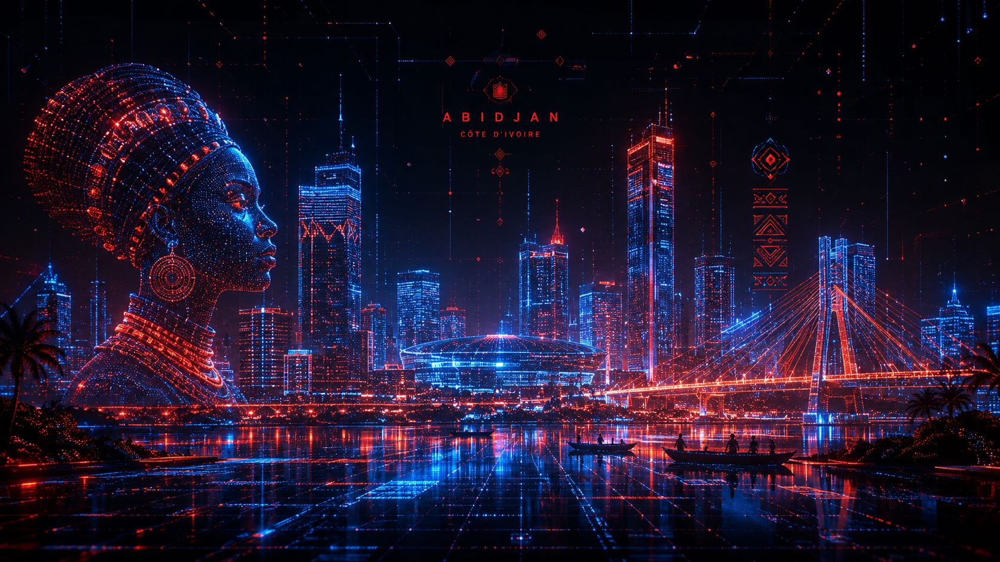

Le studio
Kweni Studio est un laboratoire hybride entre design, jeu vidéo et intelligence artificielle. On crée des expériences ancrées dans les réalités africaines, en partant d'Abidjan pour toucher le monde.
Ce qu'on croit
On ne représente pas l'Afrique. On la construit.
La représentation est un acte passif. La construction, un acte souverain.
Le jeu vidéo est le nouveau griot.
Les griots transmettaient l'histoire et les valeurs. Le jeu fait pareil, à l'échelle de la planète.
Abidjan est une capitale numérique.
Elle ne le sait pas encore. Chaque projet lancé d'ici en est une preuve de plus.
La créativité africaine n'attend pas de permission.
On écrit notre propre récit et on invite le monde à le lire.
Un studio indépendant peut changer un regard.
Pas besoin de millions ni de centaines de salariés. Une vision claire et des outils accessibles suffisent.
L'IA est un outil, pas une menace.
Bien utilisée, elle décuple ce qu'une seule personne peut créer. C'est l'idée de Pensée IA.

Fondateur
Yao Baba Ange Emmanuel
Designer graphique, développeur web et mobile, auteur. J'ai fondé Kweni Studio avec une idée fixe : l'Afrique a des histoires puissantes à raconter, et le jeu vidéo est le meilleur médium pour le faire.
Chaque projet du studio est pensé, codé et designé à Abidjan. Le but n'est pas seulement de divertir, mais de bâtir des écosystèmes qui valorisent notre culture, notre musique, notre sport et notre quotidien.
« On ne demande pas l'autorisation d'exister sur la scène mondiale. On construit notre propre scène. »
Le labo
Pensée IA
Des agents spécialisés pour réfléchir, auditer, coder, créer et planifier, avec mémoire persistante et vision multimodale. L'outil qui alimente l'écosystème Kweni.

Roadmap
Les grandes étapes, de nos premiers titres jusqu'à l'écosystème que l'on vise.
- Juin 2026
Fondation du studio
Création officielle de Kweni Studio et mise en ligne de BuzzKing, Africa Elite Manager, Africa Elite Club Manager et Pensée IA.
Accompli - Été 2026
Nouveaux mondes
Sortie de De Pierre et de Force : L'Éveil et de l'édition Coupe du Monde d'African Elite Manager. Refonte du site.
Accompli - Sept. 2026
Consolidation et mobile
BuzzKing (Rapivoire) vers Google Play, refonte mobile des interfaces, tournois, saisons et profils joueurs.
En cours - Fin 2026
Communauté
Classements mondiaux, multijoueur, extension de Pensée IA et partenariats avec des créateurs et studios africains.
À venir - 2027
Kweni Studio 2.0
De nouveaux univers, un studio physique à Abidjan et un programme pour les développeurs et créatifs africains.
Vision
Tu veux construire avec nous ?
Joueur, développeur, artiste, musicien, média ou partenaire : le studio grandit maintenant, et on cherche des gens qui y croient.